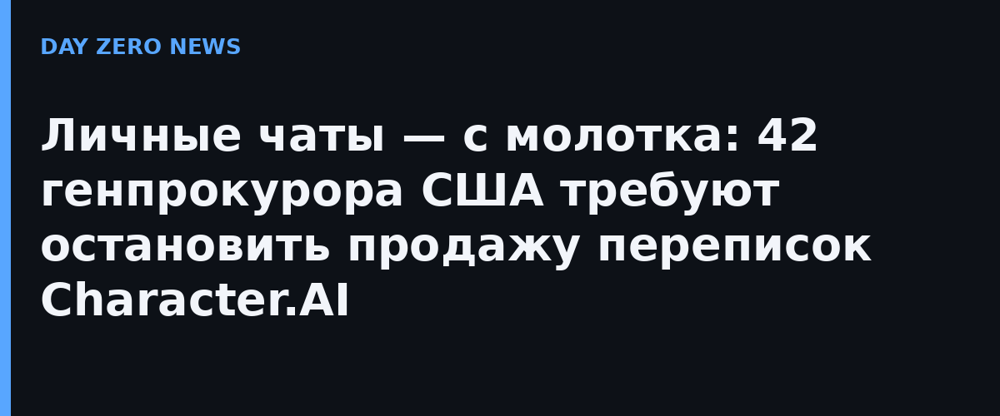

Коалиция генпрокуроров 42 юрисдикций США — демократы и республиканцы вместе с Вашингтоном — вмешалась в дело о банкротстве Character Technologies, материнской компании Character.AI, и потребовала отказать в утверждении плана продажи: в состав активов включены персональные данные пользователей. После подачи заявления о главе 11 банкротства в октябре компания намерена выставить платформу и приватные истории чатов на аукцион — тому, кто предложит больше. Возражения поданы в суд о банкротстве; офисы Калифорнии, Мэриленда, Коннектикута и Колорадо подтвердили участие в коллективном шаге.
По подсчётам ведомств, чувствительная информация касается более 21 млн американских аккаунтов, из них 2,1 млн зарегистрированы на несовершеннолетних. Главная претензия: покупатель ничем не связан — победитель аукциона сможет делать с переписками что угодно, включая перепродажу без уведомления людей, и не обязан соблюдать действующую политику конфиденциальности Character.AI. Кроме того, суд, по словам генпрокуроров, получил о сделке меньше информации, чем сами участники торгов. Отдельный аргумент — законы о безопасности чат-ботов, которые с 1 января 2027 года вступают в силу в Калифорнии, Колорадо, Нью-Йорке и Коннектикуте: продажа может автоматически добавить новые нарушения и компании, и покупателю.
«Character.AI обещала потребителям, что их данные не будут продаваться. Подобное поведение незаконно по федеральному законодательству и законодательству Калифорнии, а банкротство нельзя использовать для обхода защиты потребителей», — заявил генпрокурор Калифорнии Роб Бонта. Его коннектикутский коллега Уильям Тон напомнил, что его офис уже блокировал прошлую сделку: «Мы возражали против продажи Disney и просим суд отклонить эту — как ещё одну попытку растворить юридическую ответственность и защиту потребителей». Отдельного официального анонса самой Character.AI нет: публичного ответа компании на возражения генпрокуроров на момент подготовки статьи не публиковалось.
Это первый крупный спор о том, чем фактически являются переписки с чат-ботом: рядовым активом банкрота или особой категорией данных. Итог разбирательства может стать прецедентом для всей индустрии разговорного ИИ — от формулировок о «добровольном согласии» до судьбы датасетов, собранных из пользовательских диалогов. Для рынка это сигнал: обещание «мы не продадим ваши данные» само по себе не является гарантией.
Если вы пользовались Character.AI, разумно сейчас: выгрузить для себя важные переписки, удалить аккаунт и отвязанные от него данные, если в этом есть потребность, и следить за решениями суда — до его вердикта чаты формально остаются частью аукционного лота. Общее правило на будущее — не сообщать чат-ботам того, что не стали бы выкладывать в открытую переписку: в серых схемах утечек и распродаж долгов теперь оказываются не только пароли, но и откровения.